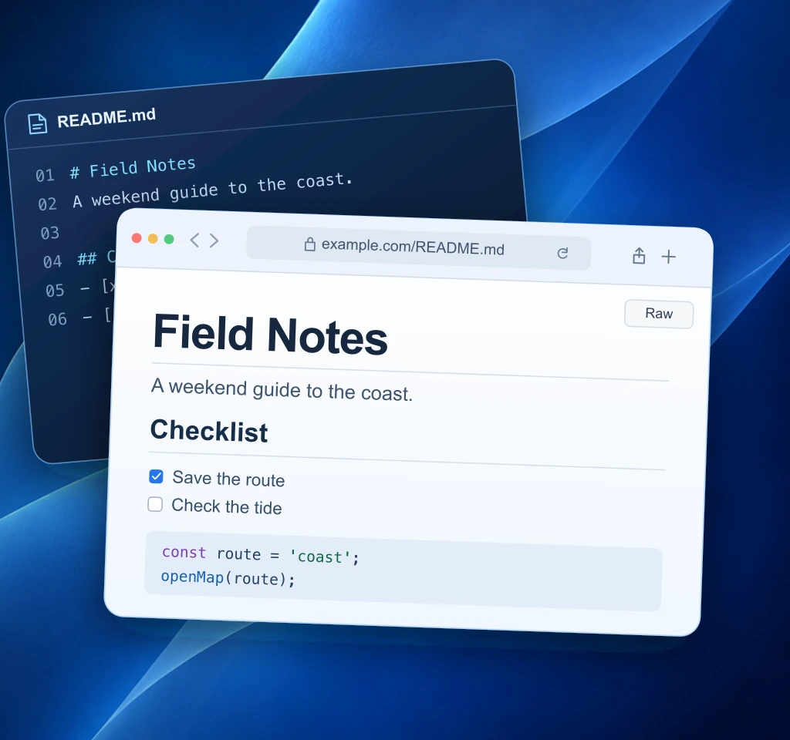
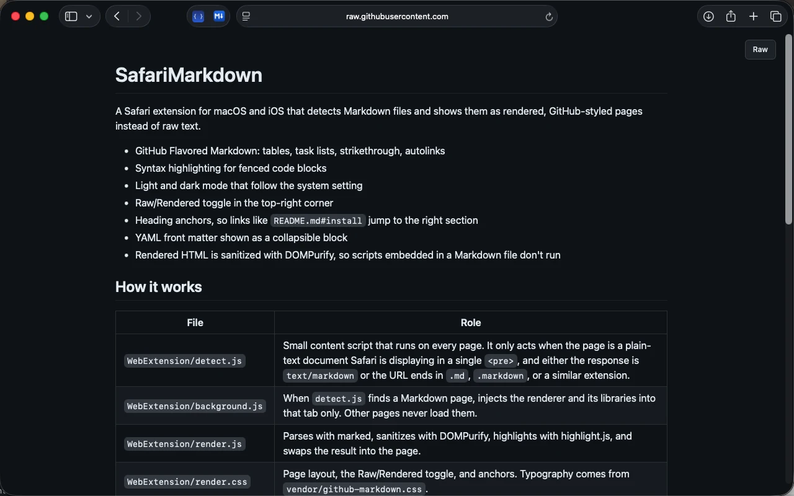
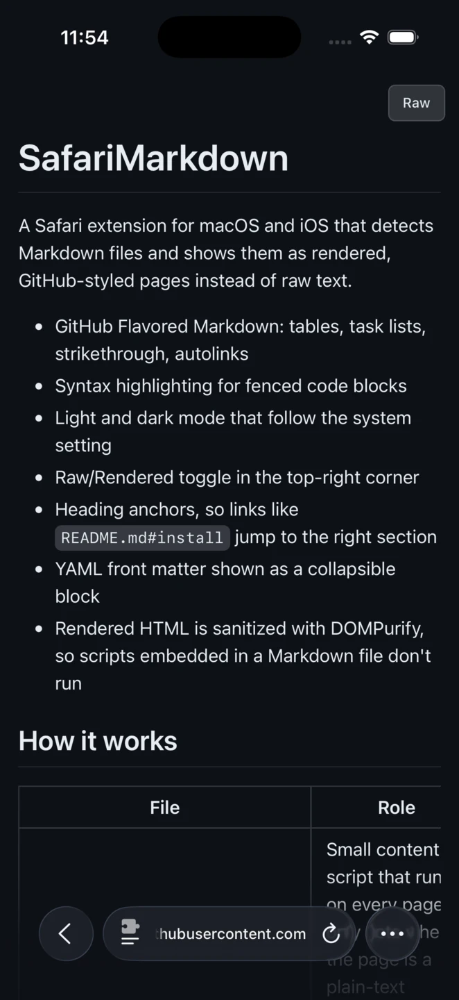
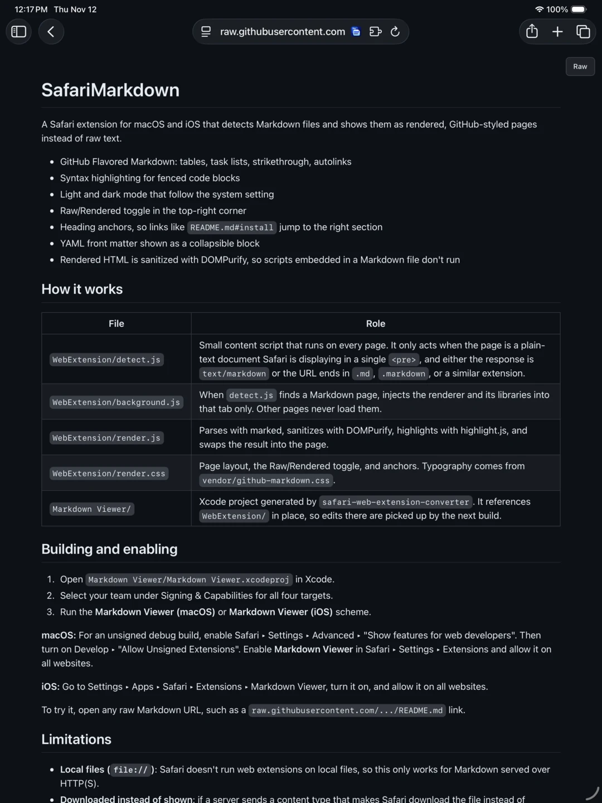

Field Notes
A weekend guide to the coast.
Checklist
- ✓ Save the route
- Check the tide
Open the route
const route = 'coast';
openMap(route);Safari extension
Open a Markdown link and read it as a formatted page. Headings, tables, task lists, and highlighted code make READMEs and documentation easier to scan.

Interactive preview
Switch between Raw and Rendered to see how the same Markdown file looks in Safari.
A weekend guide to the coast.
const route = 'coast';
openMap(route);# Field Notes
A weekend guide to the coast.
## Checklist
- [x] Save the route
- [ ] Check the tide
## Open the route
```js
const route = 'coast';
openMap(route);
```Screenshots
See a rendered README on iPhone, iPhone Duo, iPad, and Mac.



Getting started
Install the app, enable the extension, then open a Markdown link in Safari. Rendering happens on your device.
Get setup help